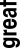
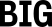
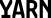
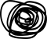

You’re in the messy middle of something.
It's where I do my best work.
I’m in the business of explaining complicated things, clearly. I learn how your company works, find what makes it special, and bring it to life through words and images.
The messy middle is actually a wonderful place to be.
It’s also anxiety-inducing.
It brings panic and wonder and late nights spent asking, “How will we ever figure this out?” Those of us who work hard at being creative for a living know a thing or two about the messy middle. We live here. And right now, it feels a lot like working on the energy transition. There’s so much we haven’t figured out yet. But we will. We’ll invent new technologies, new companies, and new ways forward. And yes, there will be panic and wonder and late nights along the way.
I can’t think of a more exciting place to be.